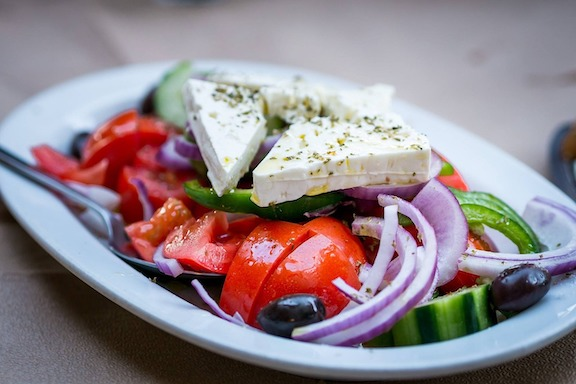

Sasha's Spin on a BLT Sandwich
Ingredients
- 2 slices of sourdough bread
- 4-5 slices of extra crispy bacon
- Baby arugula
- 1 tomato, sliced
- 1/2 avocado
- 1 lemon
- Mayonnaise
- Olive oil
- Salt and pepper
Preparation
- Place 2 slices of sourdough bread in toaster
- Mash up avocado and mix with lemon juice, salt, and pepper
- Spread avocado mixture on 1 slice of bread and mayonnaise on the other
- Place handful of arugula on the slice of bread with avocado and drizzle with olive oil and lemon juice
- Place tomato slices over the arugula and sprinkle with salt and pepper
- Place bacon slices and cover sandwich with the other slice of bread
- Slice in half and enjoy!

Ingredients
- 1 mini cucumber, chopped
- Handful of cherry tomatoes, chopped
- 1/4 cup red onion, finely chopped
- Feta cheese
- 1 tbsp olive oil
- 2 tsp white wine vinegar
- Dried oregano
- Salt and pepper
Preparation
- Chop up cucumber, tomatoes, and red onion and place in a bowl
- Sprinkle a handful of feta cheese over salad
- Mix in olive oil and white wine vinegar
- Sprinkle with dried oregano, salt, and pepper
- Enjoy!